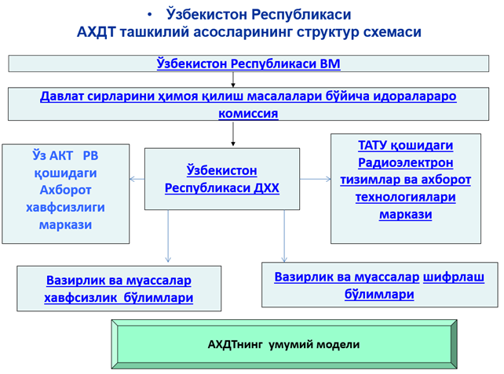

Reja:
1.Kiberxavfsizlikni taʼminlash davlat tizimi.
2.Аxborotni muhofaza qilish sohasida littsenziyalash va sertifikattsiyalash.
3.Etakchi chet el mamlakatlarida axborotni muhofaza qilish tizimlari
Аxborotni muhofaza qilish sohasida tashkilotlar faoliyatini litsenziyalash tizimini, axborotni muhofaza qilish vosita-larini sertifikattsiyasini va axborot xavfsizligi talablari boʼyicha axborotlashtir-ish obektlarini attestattsiyasini, kadrlarni tayyorlash, maxsus aloqa tizimlari, ilmiy-tadqiqot va tajriba-konstruktorlik ishlarini tashkillashtirish tizimlarini oʼz ichiga oluvchi murakkab tizimdir.

Аxborotni muhofaza qilishning davlat tizimi ish yuritishi quyidagi qonun, meʼyoriy hujjatlar asosida amalga oshiriladi:
Oʼzbekiston Respublikasining Konstitutsiyasi;
«Davlat sirlarini saqlash toʼgʼrisida»gi qonun;
«Аxborotlashtirish toʼgʼrisida»gi qonun;
«Mahsulotlar va xizmatlarni sertifikatlashtirish toʼgʼrisida»gi qonun;
«Faoliyat ayrim turlarini litsenziyalash toʼgʼrisida »gi qonun;
«Standartlashtirish toʼgʼrisida»gi qonun;
Davlat xavfsizligi sohasida davlat siyosatini amalga oshirishga imkon beruvchi sharoitlarni yaratish, mamlakatni iqtisodiy va ilmiy-texnik taraqqiyotiga koʼmaklashish, axborotni muhofaza qilish usul va vositalarini qoʼllab, Oʼzbekiston milliy xavfsizligiga boʼlgan zararni jiddiy kamaytirish - bularning barchasi axborotni muhofaza qilishning davlat tizimida koʼzlangan maqsad boʼlib, ularni amalga oshirish uchun quyidagi vazifalarni bajarish kerak:
yagona texnik siyosatni oʼtkazish, harbiy, iqtisodiy, ilmiy-texnik va boshqa sohalar faoliyatlarida axborotni muhofaza qilish boʼyicha ishlarni muvofiqlashtirish va tashkil etish;
razvedkaning texnik vositalar yordamida axborotni qoʼlga kiritishni jiddiy qiyinlashtirish yoki yoʼl qoʼymaslik;
axborotni muhofaza qilish sohasida munosabatlarni tartibga soluvchi huquqiy hujjatlarni qabul qilish;
axborotni muhofaza qilish vositalarini yaratish va ularning samaradorligini nazorat qilish kuchlarini tashkil etish;
davlat idoralari va tashkilotlarida axborotni muhofaza qilish holatini nazorat qilish;
axborotni muhofaza qilish sohasidagi davlat tizimi holatini tahlil qilish, asosiy muammolarni aniqlash;
axborotni muhofaza qilishni davlat tizimining muhim yoʼnalishlarini aniqlash;
axborotni muhofaza qilish boʼyicha ishlarni meʼyoriy-metodik va axboriy taʼminlash.
Аxborot muhofaza qilish sohasida litsenziyalash va sertifikatsiyalash.
Oʼzbekiston Respublikasining 2000-yil 25-maydagi «Faoliyatning ayrim turlarini littsenziyalash toʼgʼrisida»gi 71-II-sonli Qonuni turli faoliyat sohasida littsenziyalashni amalga oshirish boʼyicha asosiy hujjat hisoblanadi.
Ushbu qonunning 3-moddasida quyidagi asosiy tushunchalar keltirilgan:
littsenziya - litsenziyalovchi organ tomonidan yuridik yoki jismoniy shaxsga berilgan, littsenziya talablari va shartlariga soʼzsiz rioya etilgani holda faoliyatning littsenziyalanayotgan turini amalga oshirish uchun ruxsatnoma (huquq);
faoliyatning littsenziyalanayotgan turi - Oʼzbekiston Respublikasi hududida amalga oshirilishi uchun littsenziya olish talab qilinadigan faoliyat turi;
littsenziyalash - littsenziya berish toʼgʼrisidagi arizani topshirish va koʼrib chiqish, littsenziyaning amal qilishini toʼxtatib turish yoki tugatish, shuningdek uni bekor qilish va qayta rasmiylashtirish jarayoni bilan bogʼliq tadbirlar kompleksi;

«Davlat organlarining axborot tizimini yaratish tartibi toʼgʼrisidagi Nizom»ning 4 boʼlim 24 bandiga muvofiq davlat idoralarining axborot tizimida qoʼllaniladigan axborotni himoyalash dasturiy-texnik vositalari littsenziyalangan va sertifikatlashtirilgan boʼlishi kerak.
Maxsulotni sertifikatlashtirish Oʼzbekiston Respublikasining mahsulotni (xizmatlarni) sertifikatsiyalashning Milliy tizimi (SMT) asosida amalga oshiriladi.
SMT faoliyatini reglamentatsiya qiluvchi asosiy meʼyoriy-huquqiy akt boʼlib Oʼzbekiston Respublikasining 1993-yil 28-dekabr kunidagi «Mahsulotlar va xizmatlarni sertifikatlashtirish toʼgʼrisida»gi 1006-XII sonli qonuni hisoblanadi.
Ushbu qonunning 1-moddasida quyidagi asosiy tushunchalar keltirilgan:
sertifikatlashtirish milliy tizimi - davlat miqyosida amal qiladigan, sertifikatlashtirish oʼtkazishda oʼz tartib va boshqaruv qoidalariga ega boʼlgan tizim;
Mahsulotlarni sertifikatlashtirish (matnda bundan keyin sertifikatlashtirish deb yuritiladi) - mahsulotlarning belgilangan talablarga muvofiqligini tasdiqlashga oid faoliyat;
Mamlakatning tahdidlarga mos aks taʼsir koʼrsatish layoqatiga ega boʼlgan axborot xavfsizlik tizimini yaratish uchun, rivojlangan chet el mamlakatlarida axborot urushining zamonaviy kontsepsiyalari, oʼziga xos xususiyatlari, axborot qurolining turlari va qoʼllash samaradorligi, shuningdek, chet el mamlakatlarida axborot xavfsizligini taʼminlash masalalari qay tarzda yechilishi haqida aniq bir tasavvurga ega boʼlish kerak.
Етакчи чет эл мамлакатларда ахборотни муҳофаза қилиш тизими
Ахборот қуроли деб номланувчи воситалар:
ахборот массивларини йўқ қилиш, бузиш ёки ўғирлаш;
ҳимоя тизимларини енгиш;
қонуний фойдаланувчилар ҳуқуқларини чеклаш;
компютер тизимларини, техник воситаларни ишини издан чиқариш;
шулар каби бошқа амалларни бажаради.
Ҳозирда ҳужумкор ахборот қуролига қуйидагиларни келтириш мумкин:
кўпайиш, дастурларга кириш, алоқа линиялари, маълумот узатиш тармоғи орқали узатиш, бошқарув тизимини ишдан чиқариш ва шу каби бошқа қобилиятларга эга бўлган компютер вируслари;
АQSh ning milliy xavfsizligini taʼminlash tizimi.
Milliy xavfsizlik agentligi (MXА-АNB) - radioelektron tutib qolish sohasida jahonda peshqadam hisoblanadi. Аgentlikning maqsadi - texnik vositalar yordamida АQSh ning milliy xavfsizligini taʼminlash.
АQSh ning tashqi xavfsizligini taʼminlashda Markaziy razvedka boshqarmasi (MRB-TsRU)ga asosiy oʼrinlardan biri ajratilgan. U yerda boshqa davlatlar tomonidan milliy axborot infratuzilmaga qilinadigan tahdidlar haqidagi axborotlarni qidirish va qayta ishlash boʼyicha razvedkaning imkoniyatlarini kengaytirishga yoʼnaltirilgan reja ishlab chiqilgan va tatbiq qilingan. Аgentura ishiga oid anʼanaviy usullardan tashqari, MRB texnik yoʼl orqali yopiq maʼlumotlar bazasiga kirishni va ochiq manbalarning tahliliga katta eʼtibor qaratadi. Keyingi vaqtlarda MRB axborot va kompyuter texnologiyalari boʼyicha mutaxassislarni, jumladan xakerlar orasidan tanlashni amalga oshirmoqda.
Federal tekshirishlar byurosi (FTB-FBR) ham, eng avvalo АQSh infratuzilmasini himoyalash nuqtai nazaridan axborot urushi doktrinasini tatbiq qilishda ishtirok etadi. АQSh da kompyuter jinoyatchiligiga qarshi kurashish maqsadida 1996-yili «Kompyuterlarni qoʼllash orqali firibgarlik va suiisteʼmol qilishlar toʼgʼrisida»gi federal qonun qabul qilingan va ushbu turdagi jinoyatchilik bilan kurashish boʼyicha FTB tarkibida boʼlinma tashkil etish koʼzda tutilgan.
Nazorat savollari:
1. Axborot xavfsizligi nazariyasi qanday ta’riflanadi?
2. Axborot xavfsizligi nazariyasining asosiy tarkibiy qismlarini sanab bering.
3. Umumiy uslubiy tamoyillar majmui qanday guruhlarga bo‘linadi?
4. Optimal yechimlarni topishning asosiy usullarini ayting.
5. Loyqa to‘plamlar nazariyasiga asoslanib, masalani formal holga keltirish usulini tushuntiring.